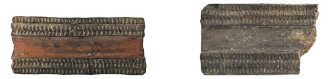
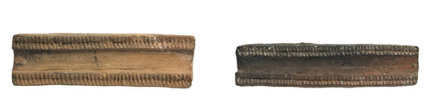
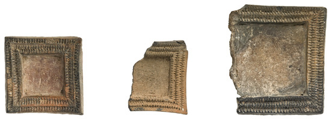
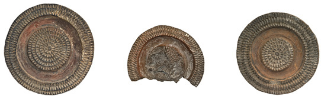
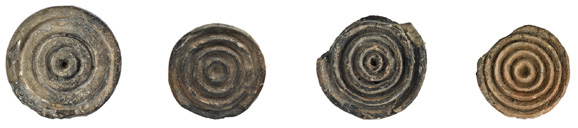
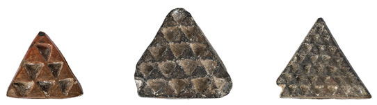
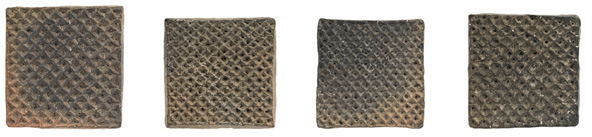
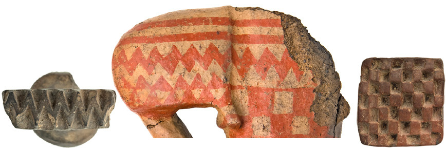

Capítulo 5Chapter 5
5. Señales de un pueblo5. Signs of a people
Llegados a este punto merece la pena plantear un conjunto de reflexiones finales para evaluar, entre otras cosas, de qué forma podemos abordar ahora esa manifestación cultural que son las pintaderas. Podría cuestionarse si, a la luz de toda la información compilada en este trabajo, merece la pena intentar una nueva mirada a esta materia, pues ya se han expuesto unos datos que podría pensarse que hablan por sí solos. Sin embargo, y como señalábamos en la introducción de esta obra, no nos resistimos a dejar por escrito algunas ideas suscitadas en el tiempo que ha llevado la elaboración de estas páginas, sobre todo con el objeto de promover la discusión. No se trata, por tanto, de una visión que aspire a ser alternativa, ni mucho menos definitiva o más elaborada que las expuestas en el capítulo precedente. Y tanto es así que, so pena de que sean incompletas, se ha estimado imprescindible exponer algunas consideraciones que no suponen respuestas concluyentes, sino elementos de juicio desde los que estimar estos materiales y, como no podía ser de otra forma, a los verdaderos protagonistas de esta historia: los antiguos canarios.
Para empezar, debe indicarse que las valoraciones que a continuación siguen se plantean sobre la base de dos aspectos fundamentales:
En primer lugar, y como ha querido recogerse en páginas previas, el volumen de pintaderas para las que contamos con información arqueológica precisa se ha incrementado sensiblemente en los últimos años. Tanto las piezas que en fechas recientes han engrosado la colección de El Museo Canario como otras a las que también hemos hecho mención (Museo y Parque Arqueológico Cueva Pintada, por citar el ejemplo más sobresaliente) proceden de intervenciones arqueológicas para las que se dispone de un volumen de datos nada despreciable: contexto, ubicación, asociaciones, cronologías, etc. Se brinda así la posibilidad de contar con un corpus de información que hasta el momento no siempre había estado disponible y que debe valorarse para estimar todos aquellos aspectos que cualificarían históricamente a las pintaderas. Es cierto que siguen sin ser la mayoría de las recogidas en este catálogo, pero sí suponen un porcentaje lo suficientemente importante como para considerarlo una novedad digna de ser tenida en cuenta. Más aun cuando, en virtud de los trabajos arqueológicos emprendidos en Gran Canaria en los últimos años, hemos avanzado notablemente en el conocimiento de estas poblaciones, enriqueciéndose la base empírica desde la que afrontar su explicación como formación social particular.
En segundo lugar, y con idéntica importancia que lo expuesto en los párrafos precedentes, debe indicarse que las formas, conceptos y categorías de análisis desde las que abordar el pasado prehispánico de Gran Canaria también han sufrido un cambio significativo en las últimas dos décadas. Estudios específicos, análisis de yacimientos y materiales arqueológicos, así como la incorporación de nuevos postulados teóricos sobre estas sociedades han ayudado a componer unos planteamientos sobre esta realidad histórica que, al menos en parte, difieren de aquéllos generalizados hasta hace muy poco tiempo. No es el momento ni el lugar para considerar si estas aportaciones contemporáneas son más acertadas o no, pero lo que sí se les debe reconocer es que han ofrecido una visión distinta a la que era común hasta el momento, articulando otras respuestas y, lo que puede ser más interesante, también nuevas preguntas. En justicia, hay que advertir que no en todos estos trabajos se hace mención expresa a las pintaderas, si bien tales investigaciones siempre aportan datos sobre los grupos que las fabricaron, que las usaron, en definitiva, que las incorporaron a su cotidianidad. Y ahí reside uno de sus puntos fuertes, al menos para los fines perseguidos por estas páginas.
Para empezar estas reflexiones debe recordarse, por muy obvio que pueda parecer a estas alturas, que las pintaderas aparecen representadas por todo el marco insular, en yacimientos distribuidos por toda Gran Canaria. No se trata de la manifestación arqueológica de un territorio concreto, localizándose en asentamientos próximos al litoral (Caserones de La Aldea, por ejemplo), en las medianías (El Tejar de Santa Brígida, por citar uno) o en la cumbre (Solana del Pinillo, en Tejeda). Se identifican, por tanto, de norte a sur y de este a oeste de la isla y, ni que decir tiene, en ningún caso asociadas a un tipo particular de soporte o tipología constructiva: cuevas naturales, artificiales o construcciones de superficie.
No es ésta una apreciación baladí, pues servirá de anclaje a los planteamientos que se hacen en las páginas que a continuación siguen. Desde hace unos años diferentes autores vienen planteando que Gran Canaria debe entenderse, en su globalidad, como el marco general de expresión territorial de un grupo cuyas manifestaciones culturales son mayoritariamente homogéneas y muy probablemente identificativas de una uniformidad étnica. Así las cosas, y como nos gustaría seguir defendiendo, las pintaderas1 podrían distinguirse como una muestra más de aquellas evidencias representativas de la materialidad de un grupo étnico cuya presencia es reconocible en todo el marco insular. Y aunque el concepto de etnicidad y los restos arqueológicos no son siempre dos esferas de la realidad fácilmente conciliables, en este caso resulta un punto de partida sugerente, como quisiera defenderse a partir de estas líneas. Sin querer entrar en el amplio debate relativo a la definición de grupo étnico o sobre cómo abordar su reconocimiento arqueológico, hoy en día existe un amplio consenso sobre que la etnicidad “es en última instancia un tema de autorreconocimiento de grupo y de identidad” y que no cabe duda de que eso que se ha llamado “cultura material participa activamente en la producción de representaciones discursivas de la identidad” (M. Fernández y G. Ruiz, 2011: 223-2242). Si aceptamos tales premisas, y teniendo en cuenta la amplia representación –numérica y territorial– de las pintaderas, no resulta demasiado arriesgado proponer que estos sellos constituirían uno de esos materiales entre cuyas funciones estaría servir como vehículo de representación de la identidad de los antiguos canarios, o al menos formar parte de un discurso de autorreconocimiento. Y no se trata de una visión presentista en la que se trasvasa a aquellas poblaciones la capacidad de evocación que del mundo prehispánico tienen para nosotros las pintaderas, pues parecen existir indicios que sostendrían esta propuesta.
La abundancia y extensión de estas matrices podría ser un primer argumento a esgrimir en este sentido, pues, pese a que se recuperen en los yacimientos otros restos con mayor presencia cuantitativa (industria lítica, por ejemplo), exhiben como rasgo particular que su configuración material responde mayoritariamente a unos esquemas pautados. En otras palabras, lejos de la idea generalizada de que cada pintadera es diferente de las demás, muchas de ellas –por no decir la mayoría– responden a unos esquemas compositivos muy semejantes, cuando no iguales. Es cierto que hay piezas singulares que no tienen parangón, pero no puede negarse que una parte significativa de ellas es el resultado de una repetición de esquemas que atañen tanto a la morfología del campo como a su decoración y que invita a pensar en la existencia, en no pocos casos, de esquemas casi estandarizados3.

2 cm. 2 cm. 2 cm. 2 cm. 2 cm. 2 cm. 2 cm.






Fig. 5.1. Pintaderas que muestran la reiteración de esquemas compositivos
Como se ha querido ilustrar con las imágenes previas, pintaderas de distinta procedencia presentan unas semejanzas formales que desde luego no son atribuibles al azar y que hacen patente la existencia de un esquema de composición repetitivo, en el que se conjugan –aunque no en exclusiva– ciertas morfologías del campo con una constitución decorativa y unas técnicas concretas. Estas piezas, o al menos un número nada despreciable de ellas, son el reflejo evidente de una norma en su elaboración, es decir, responderían a una pauta socialmente establecida que, a todas luces, no puede explicarse por la simple reiteración de modelos en atención a criterios estéticos. Esta reglamentación a la que aludimos podría ser un claro síntoma del empleo de estos materiales en la configuración de una imagen cargada de identidad, de identificación, de reconocimiento. De mensaje, en definitiva.
Si bien es cierto que requeriría de mayor profundidad en la investigación, una observación general de otras manifestaciones de los antiguos canarios lleva a suponer que estos modelos compositivos, u otros muy semejantes, están igualmente presentes en materiales y soportes diversos. Y aunque es cierto que es poco original este planteamiento, no está de más recordar que la decoración de muchos de los recipientes cerámicos, de algunos ídolos o ciertas representaciones pictóricas en cuevas cuentan con figuraciones semejantes a las de las pintaderas y, en no pocos casos, siguiendo patrones de composición que podrían calificarse de recurrentes. Efectivamente, y como habrá pensado el lector, es una observación que descansa básicamente en lo fenoménico, si bien por el momento lo bastante significativa como para abordar otras cuestiones.

Fig. 5.2. Detalle de un ídolo (n.º de inventario 2880) cuyos motivos decorativos y composición guardan estrechas similitudes con los representados en algunas pintaderas (n.º de inventario 3128 y 3118)
A la luz de lo expuesto cabe interrogarse si tales semejanzas son suficientes para plantear que las pintaderas formarían parte de un sistema de representación de un código (entendido éste como una combinación de signos que tienen un determinado valor dentro de un sistema establecido), habida cuenta de la ya citada reiteración de composiciones. Creemos que sí. Existen argumentos para pensar que estos sellos participan de una codificación establecida de símbolos socialmente aceptados, reconocibles por los integrantes de esta comunidad y que posiblemente formularían y transmitirían cierta información. En definitiva, y de aceptar esta proposición, podría decirse que integrarían una estrategia de comunicación visible, un lenguaje, toda vez que el receptor de la información que se muestra la reconoce, pues entiende su sistemática. La visibilidad, la posibilidad de percepción basada en esa recurrencia compositiva –ejemplificada en nuestro caso por las pintaderas– también podría interpretarse, por ello, como un recurso de identificación, en cuanto que transmite una información comprensible, pese a que pudiera servir tanto para distinguir como para aunar con su mensaje. En todo caso, si efectivamente cabe asociar las pintaderas con un sistema de comunicación codificado, los emisores y los receptores de tal información –como reconocedores de lo que se transmite– conformarían ese grupo que es capaz de autoidentificarse por compartir ciertos rasgos culturales. Tal vez no sea suficiente para confirmar su definición como grupo étnico a través de ciertos componentes materiales, pero quizás pueda entenderse como un paso más en esa dirección.
Dicha estrategia de comunicación codificada entre los antiguos canarios –por otro lado muy frecuente en numerosas poblaciones pasadas y presentes– no sólo vendría atestiguada por los indicios a los que hemos hecho alusión más arriba. Las fuentes escritas relativas a estas poblaciones se hacen eco en diversos pasajes de la existencia de comportamientos análogos en diferentes ámbitos de su vida cotidiana. Por ejemplo, ya se exponía en páginas precedentes cómo distintos autores habían puesto sobre aviso de la semejanza entre los motivos representados en las pintaderas y las marcas que, según estos textos, algunos canarios portarían en sus armas. Tales señas, quizás mejor blasones, serían también interpretables como un exponente de identificación – comunicación– de quien las muestra y de quien sabe reconocerlas, pues está al corriente de la codificación en la que reside su significado. En el caso aludido podría tratarse de emblemas personales o familiares, si bien las fuentes dan cuenta de otros elementos que permitirían distinguir la condición social de quien hacía gala de ellos o de quienes estaban obligados a mostrarlos.
En no pocas ocasiones los textos etnohistóricos relatan las evidentes diferencias que en el ropaje, la forma de llevar el cabello, la barba o incluso en ciertos comportamientos se establecerían entre los llamados por estos mismos documentos “nobles” y “villanos”. Una generalización y una externalización de las desigualdades, sobre las que abundan las asimetrías en la justicia o el lugar y el modo de sepulcro, que hace que no sea demasiado arriesgado suponer la normalización de todo un repertorio de códigos pautados consustanciales a la cotidianidad de estas poblaciones. Y es en este marco de comportamientos sociales donde las pintaderas, como otros tantos elementos, pueden cobrar un sentido global y facilitar, con ello, parte de su explicación histórica.
La comunicación humana, en su sentido más amplio, es un fenómeno social, y precisamente es en este contexto donde el uso de estrategias codificadas de transmisión de información adquiere su pleno significado. Y si hoy sabemos qué podía significar que, entre los antiguos canarios, una persona llevara el pelo o la barba recortada de una determinada forma o portara una indumentaria u otra, desconocemos buena parte de sus otros códigos de comunicación-identificación, restringiéndose con ello las apreciaciones que al respecto pueden hacerse. Si las pintaderas son, como proponemos, una expresión material de estrategias de transmisión de información o fórmulas de reconocimiento e identificación empleadas por estas poblaciones, lamentablemente desconocemos las bases de codificación sobre las que se construyen. Por ello, su preciso significado se nos escapa. No sabemos exactamente qué se comunicaría mediante el uso de ciertas composiciones o si variarían o no cuando se combinaban entre sí. Igual de difícil es saber sobre qué soportes se estamparían (¿impresiones directas sobre materiales blandos?, ¿mediante el empleo de tintes?), si siempre testimoniarían lo mismo o si bastaría portarlas para transmitir una información particular. Este conjunto de incógnitas, de nuevas preguntas, resulta de difícil respuesta. Sin embargo, si valoramos ahora los contextos de aparición de las pintaderas podremos apuntar algunas posibilidades. Aunque también es previsible que deriven en más interrogantes.
A lo largo de las páginas anteriores ya se ha señalado que, salvo dudosas excepciones, la mayor parte de los sellos se han recuperado en ámbitos domésticos. En los distintos yacimientos arqueológicos, las pintaderas aparecen junto a los desechos generados en el transcurso de la vida cotidiana, normalmente útiles descartados o fragmentados, restos óseos de animales, conchas de moluscos… En principio, tales asociaciones no deben hacernos pensar que, por mera agrupación, las matrices deban vincularse directamente con las actividades que implicaron la transformación y manipulación de productos animales y vegetales. Los rellenos en los que se identifican las pintaderas, efectivamente, son el resultado de acciones en las que las artesanías o la preparación de alimentos desempeñan un especial protagonismo, pero no puede olvidarse que son también el producto de otras muchas actividades que tienen lugar en los espacios vividos. Es necesario abrir un breve paréntesis para, al calor de la investigación actual, abordar lo que supondrían eso que ha dado en llamarse espacios domésticos. De entrada, no podemos limitar nuestra consideración de los contextos habitacionales a su única estimación como lugares en los que se refugiaban o pernoctaban estas poblaciones y en los que preparaban y consumían los productos que formaban parte de su dieta habitual. Son algo más, y los rasgos que los definen históricamente así lo sustentarían.
Veamos algunos de ellos.
Estos lugares, o al menos buena parte de ellos, presentan como principal rasgo común una vocación de permanencia, de directa asociación a un territorio. Aunque todavía son escasas las series de cronologías absolutas en Gran Canaria, las disponibles reflejan cómo muchos de los asentamientos tienen una vigencia temporal de varios siglos, perpetuándose una población en un contexto específico, pese a que ocasionalmente se puedan apreciar discontinuidades. Las reordenaciones de los espacios domésticos, las reformas que sufren ciertas construcciones, la directa asociación con enclaves fúnebres y de almacenamiento, la identificación de áreas de especialización funcional, etc., son indicadores de que la citada perduración en el tiempo es un fenómeno generalizado, al menos en aquellos asentamientos de mayores dimensiones.
A ello se añade que tales lugares se erigen en un eje fundamental desde el que parten la gestión y materialización de las estrategias de explotación del territorio y de los recursos que éste ofrece, como confirman distintos trabajos de investigación dados a conocer en los últimos años. Pero además, y en directa relación con lo ya dicho, es en estos espacios donde opera buena parte de las vías de producción y reproducción social, manifestándose en ellos una porción significativa de aquellos elementos que garantizan la perpetuación del colectivo como tal. Aunque no siempre pueda reconocerse una huella arqueológica de estos acontecimientos, es innegable que estos espacios constituyen contextos en los que se materializan, se normalizan, se perpetúan muchos de los lazos que asocian a las personas entre sí en el marco de una sociedad concreta. Son, por tanto, escenarios complejos de lo social donde la identificación, la transmisión formal de información, el autorreconocimiento y la fijación de identidades desempeñarían un papel trascendente.
Así las cosas, los ámbitos domésticos serían espacios donde tiene lugar buena parte de la interacción social, donde la cotidianidad no sólo atañe a preparar alimentos, dormir o fabricar herramientas, sino también a sentar las bases de la red de vínculos interpersonales que sostiene cualquier agrupación humana. Y como es sabido, tales relaciones se establecen mediante todo un conjunto de estrategias, entre las que se incluyen la comunicación no verbal y lo que se ha denominado la “experiencia sensorial cotidiana”, que contribuyen a fijar las estructuras sociales y las categorías culturales. Como ha indicado recientemente Antonio Blanco (2010: 159), el ámbito doméstico constituye uno de los espacios en los que acontece la enculturación o socialización primaria de los individuos, y su estudio ofrece informaciones de gran valor. Es allí precisamente donde trata de perpetuarse la memoria social.
Las pintaderas, si atendemos a su condición particular y a la recurrencia de sus composiciones, pueden ser leídas en este particular escenario de interacción social, formando parte de las fórmulas de comunicación, de transmisión de la información a partir de un código reconocido por aquéllos que habitan en un espacio, ya sea éste un asentamiento concreto, una comarca o el conjunto de Gran Canaria. Es probable que este mismo sentido pueda darse a otras manufacturas e incluso a otros rasgos culturales que no han dejado huella material en los yacimientos, pues se trata de un comportamiento habitual en numerosas sociedades. Muchos elementos, y entre ellos suponemos que nuestros sellos, participarían de un marco cotidiano de interacción en el que tratan de reproducirse aquellos comportamientos que dotan de sentido social a una comunidad de personas. Desde los más mundanos hasta aquéllos en los que reside la estructura básica de una comunidad históricamente definida.
El carácter doméstico de las pintaderas, pero también su generalización en el territorio insular, hace de ellas una expresión de la etnicidad de los antiguos canarios, no tanto de identidad frente a “otros”, sino de autorreconocimiento en cuanto que constituyen fórmulas de comunicación cotidiana basadas en un código compartido. Y es con este mismo sentido con el que se pueden explicar otros atributos identificados por las fuentes escritas, como los ya mencionados modos de cortar el cabello o las barbas, los blasones de las tarhas o la materialización de dónde y cómo se ponen en práctica las tradiciones funerarias.
Con todo, seguimos sin poder aportar más indicios de qué información se transmite mediante el empleo de las pintaderas o cómo se haría uso de ellas, debiendo limitarnos a su apreciación como elementos cotidianos que cobran sentido en los espacios domésticos y que son configurados formalmente a partir de un patrón social generalizable al conjunto de Gran Canaria. Finalmente hay que destacar que, si bien es cierto que las representaciones de ese código de comunicación social al que aludimos pueden reconocerse en otros materiales, no hay duda de que las pintaderas fueron objetos creados ex profeso para ese propósito. Precisamente en este hecho radican su excepcionalidad y el mejor testimonio de la importancia que tendrían en la formulación de mensajes, en la transmisión cotidiana de información. En definitiva, en la creación de identidades sociales que pueden ir desde lo individual hasta lo colectivo.
Notas al capítulo 5
- Tanto el objeto como los usos a los que estuvieron destinadas.
- Un trabajo muy recomendable para todas aquellas personas que quieran profundizar en la discusión sobre etnicidad y su no siempre fácil relación con la arqueología.
- Esta circunstancia resulta evidente, por ejemplo, en la estrecha relación observada entre la morfología del campo y los motivos que en él se representan (véanse las tablas del capítulo 2 y del anexo). Otro buen argumento en este sentido es la presencia en el repertorio estudiado de pintaderas que, pese a presentar defectos o rupturas en el proceso de su elaboración, no son desechadas y se terminan guisando para ser usadas. Puede deducirse de ello que prevalece sobre ciertos detalles –número de incisiones o excisiones, por ejemplo– el mantenimiento de un esquema compositivo socialmente aceptado. Que la pintadera presente un detalle particular, producido de forma intencional o accidental, parece ser una cuestión accesoria siempre y cuando no se alteren los elementos básicos del patrón que sirve de norma. Este mismo hecho quizás ayudaría a justificar también que reconozcamos pintaderas que son esencialmente iguales en su hechura aunque introduzcan pequeñas variaciones (por ejemplo en sus remates periféricos o la cantidad de impresiones que las componen).
Having reached this point, it is worth posing a series of final reflections in order to assess, among other things, in what way we may now approach that cultural manifestation which the pintaderas constitute. One might question whether, in the light of all the information compiled in this work, it is worthwhile to attempt a new look at this subject, for data have already been set out which one might think speak for themselves. Nevertheless, and as we pointed out in the introduction of this work, we cannot resist putting down in writing some of the ideas raised during the time it has taken to prepare these pages, above all with the aim of promoting discussion. This is not, therefore, a vision that aspires to be alternative, still less definitive or more elaborate than those set out in the preceding chapter. And so much is this the case that, at the risk of their being incomplete, it has been deemed essential to set out some considerations that do not constitute conclusive answers, but rather elements of judgement from which to assess these materials and, as could not be otherwise, the true protagonists of this history: the ancient Canarians.
To begin with, it must be stated that the assessments which follow are put forward on the basis of two fundamental aspects:
In the first place, and as we have sought to record in previous pages, the volume of pintaderas for which we possess precise archaeological information has increased noticeably in recent years. Both the pieces that in recent dates have swelled the collection of El Museo Canario and others to which we have also made mention (the Museo y Parque Arqueológico Cueva Pintada, to cite the most outstanding example) come from archaeological interventions for which a not inconsiderable volume of data is available: context, location, associations, chronologies, etc. This offers the possibility of counting on a corpus of information that until now had not always been available and which must be appraised in order to assess all those aspects that would historically qualify the pintaderas. It is true that they are still not the majority of those gathered in this catalogue, but they do represent a percentage sufficiently important to be considered a novelty worthy of being taken into account. All the more so when, by virtue of the archaeological works undertaken in Gran Canaria in recent years, we have advanced notably in the knowledge of these populations, the empirical basis from which to approach their explanation as a particular social formation being thereby enriched.
In the second place, and with equal importance to what has been set out in the preceding paragraphs, it must be stated that the forms, concepts and categories of analysis from which to approach the pre-Hispanic past of Gran Canaria have also undergone a significant change in the last two decades. Specific studies, analyses of sites and archaeological materials, as well as the incorporation of new theoretical postulates concerning these societies, have helped to compose approaches to this historical reality that differ, at least in part, from those generalised until very recently. It is neither the moment nor the place to consider whether these contemporary contributions are more apt or not, but what must be acknowledged of them is that they have offered a vision different from that which was common until now, articulating other answers and, what may be more interesting, also new questions. In fairness, it must be pointed out that not all these works make express mention of the pintaderas, although such investigations always contribute data on the groups that made them, that used them, in short, that incorporated them into their everyday life. And therein lies one of their strong points, at least for the purposes pursued by these pages.
To begin these reflections it must be recalled, however obvious it may seem by now, that the pintaderas appear represented throughout the insular framework, in sites distributed across the whole of Gran Canaria. This is not the archaeological manifestation of a specific territory, they being located in settlements close to the coast (Caserones de La Aldea, for example), in the medianías (El Tejar de Santa Brígida, to cite one) or on the summit (Solana del Pinillo, in Tejeda). They are identified, therefore, from north to south and from east to west of the island and, needless to say, in no case associated with a particular type of setting or constructive typology: natural caves, artificial ones or surface constructions.
This is not a trivial observation, for it will serve as an anchor for the approaches made in the pages that follow. For some years now different authors have been proposing that Gran Canaria should be understood, in its entirety, as the general framework of territorial expression of a group whose cultural manifestations are mostly homogeneous and very probably identificative of an ethnic uniformity. That being so, and as we would like to continue defending, the pintaderas1 might be distinguished as one more sample of those evidences representative of the materiality of an ethnic group whose presence is recognisable throughout the insular framework. And although the concept of ethnicity and the archaeological remains are not always two spheres of reality easily reconcilable, in this case it proves a suggestive point of departure, as we would like to defend from these lines. Without wishing to enter into the broad debate relative to the definition of the ethnic group or on how to approach its archaeological recognition, today there exists a broad consensus that ethnicity “is ultimately a matter of group self-recognition and identity” and that there is no doubt that that which has been called “material culture actively participates in the production of discursive representations of identity” (M. Fernández y G. Ruiz, 2011: 223-2242). If we accept such premises, and taking into account the ample representation –numerical and territorial– of the pintaderas, it is not too risky to propose that these stamps would constitute one of those materials among whose functions would be to serve as a vehicle for the representation of the identity of the ancient Canarians, or at least to form part of a discourse of self-recognition. And this is not a presentist vision in which there is transferred to those populations the capacity for evocation that the pintaderas have for us with respect to the pre-Hispanic world, for there seem to exist indications that would sustain this proposal.
The abundance and extent of these matrices could be a first argument to adduce in this sense, for, despite the fact that other remains are recovered in the sites with a greater quantitative presence (lithic industry, for example), they exhibit as a particular trait that their material configuration responds mostly to patterned schemes. In other words, far from the widespread idea that each pintadera is different from the others, many of them –not to say the majority– respond to compositional schemes that are very similar, when not identical. It is true that there are singular pieces that have no parallel, but it cannot be denied that a significant part of them is the result of a repetition of schemes that concern both the morphology of the field and its decoration, and which invites one to think of the existence, in not a few cases, of almost standardised schemes3.
2 cm. 2 cm. 2 cm. 2 cm. 2 cm. 2 cm. 2 cm.
Fig. 5.1. Pintaderas that show the reiteration of compositional schemes
As we have sought to illustrate with the preceding images, pintaderas of different provenance present formal similarities that are certainly not attributable to chance and that make patent the existence of a repetitive scheme of composition, in which –though not exclusively– certain morphologies of the field are combined with a decorative constitution and specific techniques. These pieces, or at least a not inconsiderable number of them, are the evident reflection of a norm in their elaboration, that is, they would respond to a socially established pattern which, plainly, cannot be explained by the simple reiteration of models in attention to aesthetic criteria. This regulation to which we allude could be a clear symptom of the use of these materials in the configuration of an image laden with identity, with identification, with recognition. Of message, in short.
While it is true that this would require greater depth of research, a general observation of other manifestations of the ancient Canarians leads one to suppose that these compositional models, or others very similar, are equally present in diverse materials and supports. And although it is true that this approach is hardly original, it is worth recalling that the decoration of many of the ceramic vessels, of some idols or certain pictorial representations in caves features figurations similar to those of the pintaderas and, in not a few cases, following patterns of composition that could be described as recurrent. Indeed, and as the reader will have thought, it is an observation that rests basically on the phenomenal, albeit for the moment significant enough to approach other questions.
Fig. 5.2. Detail of an idol (inventory no. 2880) whose decorative motifs and composition bear close similarities to those represented on some pintaderas (inventory nos. 3128 and 3118)
In the light of what has been set out it is worth asking whether such similarities suffice to propose that the pintaderas would form part of a system of representation of a code (this understood as a combination of signs that have a determinate value within an established system), given the already cited reiteration of compositions. We believe so. There are arguments for thinking that these stamps partake of an established codification of socially accepted symbols, recognisable by the members of this community and which would possibly formulate and transmit certain information. In short, and were this proposition to be accepted, one could say that they would integrate a strategy of visible communication, a language, inasmuch as the receiver of the information displayed recognises it, for he understands its systematics. Visibility, the possibility of perception based on that compositional recurrence –exemplified in our case by the pintaderas– could therefore also be interpreted as a resource of identification, insofar as it transmits comprehensible information, even though it might serve both to distinguish and to unite through its message. In any event, if indeed it is possible to associate the pintaderas with a system of coded communication, the emitters and the receivers of such information –as recognisers of what is transmitted– would constitute that group which is capable of self-identifying by sharing certain cultural traits. Perhaps this is not sufficient to confirm their definition as an ethnic group through certain material components, but perhaps it may be understood as one further step in that direction.
Such a strategy of coded communication among the ancient Canarians –on the other hand very frequent in numerous past and present populations– would not only be attested by the indications to which we have alluded above. The written sources relative to these populations echo, in various passages, the existence of analogous behaviours in different spheres of their everyday life. For example, it was already set out in preceding pages how different authors had given warning of the similarity between the motifs represented on the pintaderas and the marks that, according to these texts, some Canarians would bear on their weapons. Such signs, perhaps better, blazons, would also be interpretable as an exponent of identification – communication – of the one who displays them and of the one who knows how to recognise them, for he is conversant with the codification in which their meaning resides. In the case alluded to these might be personal or family emblems, although the sources give account of other elements that would allow distinguishing the social condition of the one who made a show of them or of those who were obliged to display them.
On not a few occasions the ethnohistoric texts relate the evident differences that would be established in dress, in the way of wearing the hair, the beard or even in certain behaviours between those called by these same documents “nobles” and “villanos”. A generalisation and an externalisation of the inequalities, on which the asymmetries in justice or the place and manner of sepulchre abound, which makes it not too risky to suppose the normalisation of an entire repertoire of patterned codes consubstantial to the everyday life of these populations. And it is in this framework of social behaviours where the pintaderas, like so many other elements, can take on a global sense and thereby facilitate part of their historical explanation.
Human communication, in its broadest sense, is a social phenomenon, and it is precisely in this context that the use of coded strategies for the transmission of information acquires its full meaning. And if today we know what it could mean that, among the ancient Canarians, a person wore the hair or beard trimmed in a certain way or carried one attire or another, we are ignorant of a good part of their other codes of communication-identification, thereby restricting the assessments that can be made in this respect. If the pintaderas are, as we propose, a material expression of strategies for the transmission of information or formulas of recognition and identification employed by these populations, we unfortunately do not know the bases of codification upon which they are built. For this reason, their precise meaning escapes us. We do not know exactly what would be communicated through the use of certain compositions or whether they would vary or not when combined with one another. Equally difficult is to know on what supports they would be stamped (direct impressions on soft materials? by means of the use of dyes?), whether they would always testify to the same thing or whether it would suffice to carry them in order to transmit a particular information. This set of unknowns, of new questions, proves difficult to answer. Nevertheless, if we now appraise the contexts of appearance of the pintaderas we shall be able to point to some possibilities. Though it is also foreseeable that these will end up as further questions.
Throughout the preceding pages it has already been pointed out that, save for doubtful exceptions, the greater part of the stamps have been recovered in domestic contexts. In the different archaeological sites, the pintaderas appear alongside the refuse generated in the course of everyday life, normally discarded or fragmented utensils, bone remains of animals, shells of molluscs… In principle, such associations should not lead us to think that, by mere grouping, the matrices must be linked directly with the activities that implied the transformation and manipulation of animal and vegetal products. The fills in which the pintaderas are identified are, indeed, the result of actions in which the crafts or the preparation of foodstuffs play a specially prominent part, but it cannot be forgotten that they are also the product of many other activities that take place in the lived spaces. It is necessary to open a brief parenthesis in order, in the warmth of current research, to address what those spaces that have come to be called domestic spaces would suppose. To begin with, we cannot limit our consideration of habitational contexts to their sole estimation as places in which these populations took refuge or passed the night and in which they prepared and consumed the products that formed part of their habitual diet. They are something more, and the traits that define them historically would bear this out.
Let us look at some of them.
These places, or at least a good part of them, present as their principal common trait a vocation for permanence, for direct association with a territory. Although series of absolute chronologies are still scarce in Gran Canaria, those available reflect how many of the settlements have a temporal validity of several centuries, a population perpetuating itself in a specific context, even though discontinuities may occasionally be appreciated. The reorderings of the domestic spaces, the alterations suffered by certain constructions, the direct association with funerary and storage enclaves, the identification of areas of functional specialisation, etc., are indicators that the aforementioned perdurance in time is a generalised phenomenon, at least in those settlements of larger dimensions.
To this is added that such places stand as a fundamental axis from which depart the management and materialisation of the strategies of exploitation of the territory and of the resources it offers, as various research works made known in recent years confirm. But moreover, and in direct relation to what has already been said, it is in these spaces where a good part of the avenues of production and social reproduction operate, manifesting in them a significant portion of those elements that guarantee the perpetuation of the collectivity as such. Although an archaeological trace of these events cannot always be recognised, it is undeniable that these spaces constitute contexts in which many of the bonds that associate persons with one another within the framework of a concrete society are materialised, normalised, perpetuated. They are, therefore, complex scenarios of the social where identification, the formal transmission of information, self-recognition and the fixing of identities would play a transcendent role.
That being so, the domestic contexts would be spaces where a good part of social interaction takes place, where everyday life concerns not only preparing food, sleeping or making tools, but also laying the foundations of the network of interpersonal ties that sustains any human grouping. And as is known, such relations are established by means of an entire set of strategies, among which are included non-verbal communication and what has been termed the “everyday sensory experience”, which contribute to fixing the social structures and the cultural categories. As Antonio Blanco (2010: 159) has recently indicated, the domestic sphere constitutes one of the spaces in which the enculturation or primary socialisation of individuals takes place, and its study offers informations of great value. It is precisely there that the social memory seeks to perpetuate itself.
The pintaderas, if we attend to their particular condition and to the recurrence of their compositions, can be read in this particular scenario of social interaction, forming part of the formulas of communication, of the transmission of information on the basis of a code recognised by those who inhabit a space, be it a specific settlement, a district or the whole of Gran Canaria. It is probable that this same sense can be given to other manufactures and even to other cultural traits that have left no material trace in the sites, for it is a behaviour habitual in numerous societies. Many elements, and among them we suppose our stamps, would partake of an everyday framework of interaction in which those behaviours that endow a community of persons with social sense seek to reproduce themselves. From the most mundane to those in which resides the basic structure of a historically defined community.
The domestic character of the pintaderas, but also their generalisation across the insular territory, makes of them an expression of the ethnicity of the ancient Canarians, not so much of identity vis-à-vis “others”, but of self-recognition inasmuch as they constitute formulas of everyday communication based on a shared code. And it is with this same sense that other attributes identified by the written sources can be explained, such as the already mentioned ways of cutting the hair or the beards, the blazons of the tarhas, or the materialisation of where and how the funerary traditions are put into practice.
All the same, we are still unable to contribute further indications as to what information is transmitted through the use of the pintaderas or how use would be made of them, and we must limit ourselves to their appreciation as everyday elements that take on meaning in the domestic spaces and that are formally configured on the basis of a social pattern generalisable to the whole of Gran Canaria. Finally, it must be stressed that, while it is true that the representations of that code of social communication to which we allude can be recognised in other materials, there is no doubt that the pintaderas were objects created ex profeso for that purpose. Precisely in this fact reside their exceptional character and the best testimony of the importance they would have in the formulation of messages, in the everyday transmission of information. In short, in the creation of social identities that can range from the individual to the collective.
Notes to Chapter 5
- Both the object itself and the uses to which they were destined.
- A work highly recommendable for all those who wish to go deeper into the discussion on ethnicity and its not always easy relation with archaeology.
- This circumstance is evident, for example, in the close relation observed between the morphology of the field and the motifs represented on it (see the tables of chapter 2 and of the annex). Another good argument in this sense is the presence in the studied repertoire of pintaderas that, despite presenting defects or breaks in the process of their elaboration, are not discarded and end up being finished off in order to be used. From this it may be deduced that, over certain details –the number of incisions or excisions, for example– there prevails the maintenance of a socially accepted compositional scheme. That the pintadera presents a particular detail, produced intentionally or accidentally, seems to be an accessory matter provided the basic elements of the pattern that serves as the norm are not altered. This same fact would perhaps also help to justify that we recognise pintaderas that are essentially identical in their making even though they introduce small variations (for example in their peripheral finials or in the quantity of impressions that compose them).